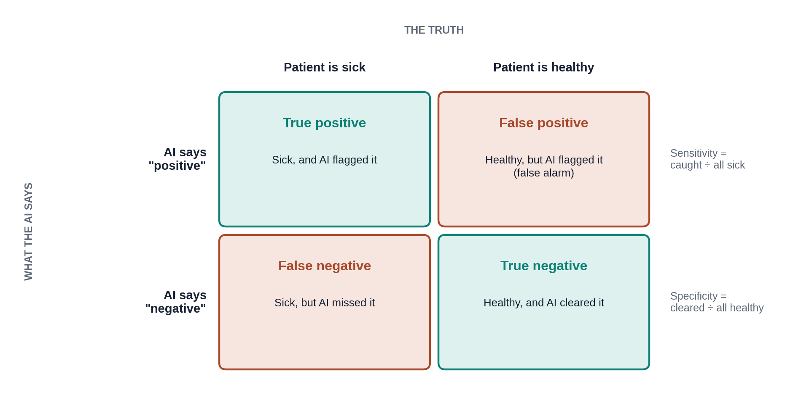
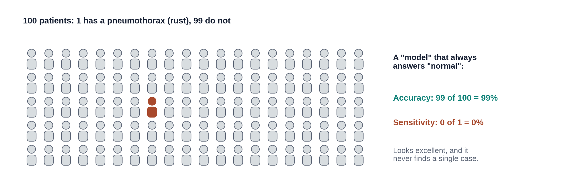

Overview
PTX-Detect is trained and tested. Its makers say it is "94% sensitive." What does that mean, and is it good? This lesson gives you the basic words for describing how well any test performs, AI or not. You will use the same ideas for lab tests and physical exam signs throughout medical school. No formulas to memorize; everything is shown with pictures of 100 patients. About 15-20 minutes.
By the end of this lesson you can:
- Fill in a 2×2 table: true and false positives, true and false negatives.
- Explain sensitivity and specificity in plain words.
- Show why "99% accurate" can be useless for a rare disease.
- Explain how moving the threshold trades missed cases for false alarms.
Four possible outcomes
Each time PTX-Detect reads a film, it says "positive" (pneumothorax) or "negative" (no pneumothorax). The patient either has one or doesn't. That gives four possible outcomes:

Sensitivity and specificity
Two numbers summarize the table. Each one looks at only one column.
- Sensitivity looks only at patients who have the disease: of the sick, how many did it catch? If 100 patients have a pneumothorax and PTX-Detect flags 94, sensitivity is 94%. It missed 6.
- Specificity looks only at patients who don't: of the healthy, how many did it clear? If 1,000 patients have no pneumothorax and PTX-Detect clears 900, specificity is 90%. It raised 100 false alarms.
A memory aid used by many students: a highly SeNsitive test, when Negative, helps rule out (SnNout). A highly SPecific test, when Positive, helps rule in (SpPin).

The accuracy trap
Accuracy is the share of all answers that were right. It sounds like the obvious number to report, but it hides a trap when a disease is rare.

That is why you should look for sensitivity and specificity, not just accuracy, whenever you read about an AI tool. A headline like "AI is 99% accurate" tells you very little on its own.
When it flags a film, how often is it right?
Sensitivity and specificity describe the tool. At the bedside, you have a different question: PTX-Detect just flagged this film. How likely is it that there really is a pneumothorax? That is the positive predictive value (PPV): of all the alerts, the share that are real.
PPV depends heavily on how common the disease is. If pneumothorax is rare in the patients being scanned, even a good tool produces many more false alarms than true finds, simply because there are so many more healthy patients to be wrong about. You will see this in the slider below: count the pink circles against the teal ones.
Lesson 3.2 comes back to this: the same tool can be useful in an emergency department and swamp a screening clinic with false alarms.
Try it: the threshold dial
PTX-Detect does not really answer yes or no. It gives each film a score from 0 to 1. Someone has to choose a threshold: films scoring above it get flagged. Move the dial and watch what happens to 100 made-up patients, 10 of whom have a pneumothorax.
There is no threshold that catches every pneumothorax with no false alarms. Lowering it catches more disease and raises more false alarms; raising it does the opposite. The right setting depends on the job:
- Screening or triage (put possible pneumothoraces at the top of the list): a missed case is costly and a radiologist checks every flag anyway, so a lower threshold makes sense.
- Confirming (acting on the flag with little further checking): false alarms are costly, so a higher threshold makes sense.
When a company reports one sensitivity and one specificity, they were measured at one particular threshold. A hospital can often change it.
Knowledge check
Answer each question to continue. Any answer is fine; read the explanation.
In a test set, 40 patients have a pneumothorax. PTX-Detect flags 30 of them. What is its sensitivity?
Sensitivity looks only at the sick: 30 caught out of 40 sick = 75%. The healthy patients don't enter into it; they are needed for specificity.
A company says its tool for a rare cancer is "99.5% accurate." The cancer occurs in 0.5% of scans. Why should you be cautious?
When disease is rare, accuracy is dominated by the healthy patients. Always saying "no cancer" scores 99.5% while finding nothing. Ask for sensitivity and specificity instead.
PTX-Detect is used to move possible pneumothoraces to the top of the radiologist's list. A radiologist reads every film anyway. Which way should the threshold go?
For triage, a miss means a sick patient waits; a false alarm only means a normal film is read a bit sooner. A lower threshold catches more true cases at the cost of more false alarms, which is acceptable here.
Key takeaways
- Every answer falls in one of four boxes: true positive, false positive, false negative, true negative.
- Sensitivity: of the sick, how many were caught. Specificity: of the healthy, how many were cleared.
- Accuracy can look excellent for a useless tool when the disease is rare.
- PPV (of the alerts, how many are real) falls when the disease is rare.
- The threshold trades missed cases for false alarms. Lower suits screening; higher suits confirming.
Go further (optional)
- ROC and AUC, Clearly Explained (StatQuest, YouTube)
- Accuracy, precision and recall (Google ML Crash Course; "recall" is another word for sensitivity, "precision" for PPV)
- Lesson 3.2 what accuracy does not tell you, and how prevalence changes PPV at a new hospital
Next lesson: PTX-Detect scored well in testing. Why might it still fail at your hospital?